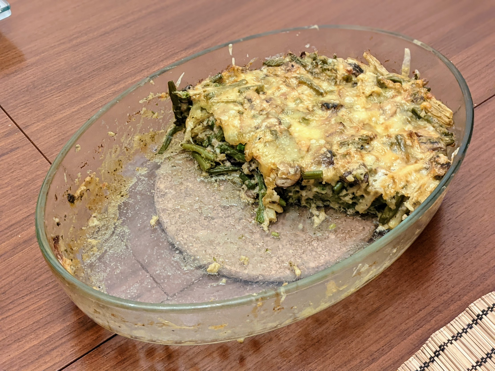

Gratin de haricots verts aux champignons

Pour 3-4 personnes :
- 600g de haricots verts, frais ou en boîte
- 250g de champignons
- 120g d'emmental râpé
- Un jaune d'œuf
- 100mL de crème fraîche
- 50g de beurre
- 20g de farine
- (Facultatif) Un peu d'herbes de Provence
- (Facultatif) Un peu de persil
- Sel, poivre, muscade
- Si on utilise des haricots frais, les laver, équeuter et les faire cuire pendant 10 minutes dans une casserole d'eau bouillante salée. Sauter cette étape si on utiliser des haricots en boîte (à la place, les égoutter et les rincer).
- Faire revenir les haricots verts quelques minutes dans une poêle avec l'huile d'olive, un peu de sel, de poivre et d'herbes de Provence. Pendant ce temps, laver et couper les champignons en morceaux moyens, et faire préchauffer le four à 180°C.
- Réserver les haricots verts, et faire revenir les champignons quelques minutes dans la poêle
avec la moitié du beurre, un peu de sel, de poivre et de persil. Les mélanger avec les haricots.
- Mélanger ensemble le reste du beurre ramolli, la farine, la moitié de l'emmental
râpé, le jaune d'œuf, la crème. Saler, poivrer, muscader.
- Beurrer un plat à four. Disposer les légumes, napper de la sauce, ajouter le reste de l'emmental râpé, et mettre au four au moins 20 minutes (jusqu'à ce que ça soit bien gratiné)
Retour à la liste des recettes